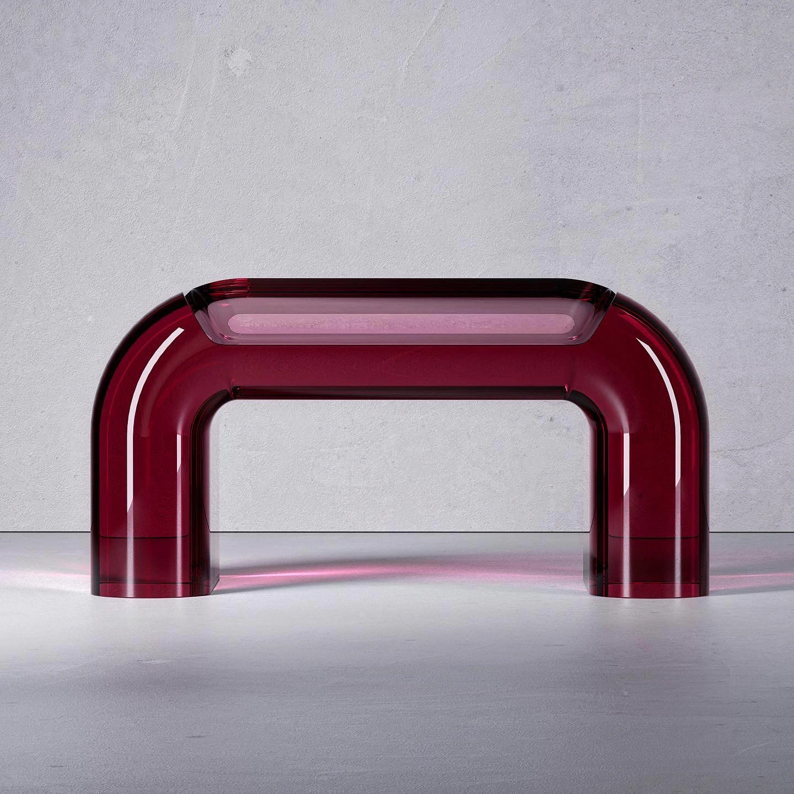
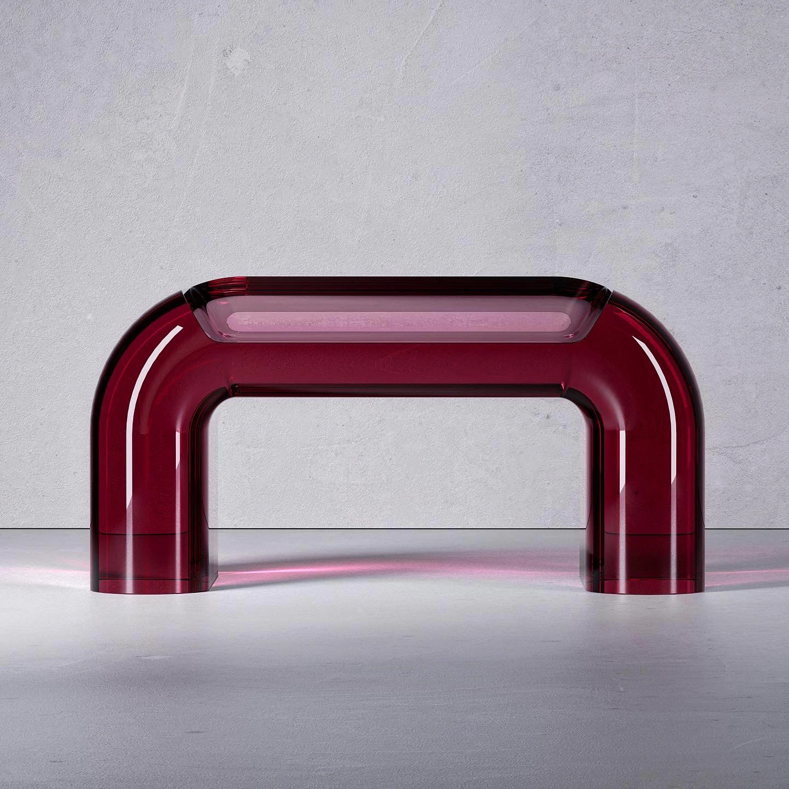

SIMON EVRARD
Candy chair, Cherry taste
Description : Cette pièce monolithique est une véritable ode à la transparence et à la pureté géométrique. Elle s'inscrit dans la lignée du design minimaliste radical qui cherche à dématérialiser l'objet pour n'en garder que l'essence colorée. Conçue comme un bloc de lumière solidifié, elle rompt avec l'assemblage traditionnel pour offrir une forme fluide et continue, évoquant une pierre précieuse taillée à grande échelle ou un volume de liquide pourpre figé instantanément dans le temps.
Structure : Elle est réalisée en résine de coulée ou en méthacrylate (PMMA) de très forte épaisseur, teinté dans la masse d'un bordeaux profond et énigmatique (teinte "prune" ou "aubergine"). La technique de fabrication permet d'obtenir ces courbes douces et ces arêtes arrondies sans aucune jonction visible, conférant à l'objet une unité parfaite. La translucidité du matériau crée un dialogue constant avec la lumière environnante, projetant des ombres colorées au sol et offrant une profondeur visuelle fascinante qui change selon l'angle de vue.
Dimensions : H. (Hauteur totale) : 40 cm, L. (Largeur) : 90 cm, P. (Profondeur) : 50 cm.